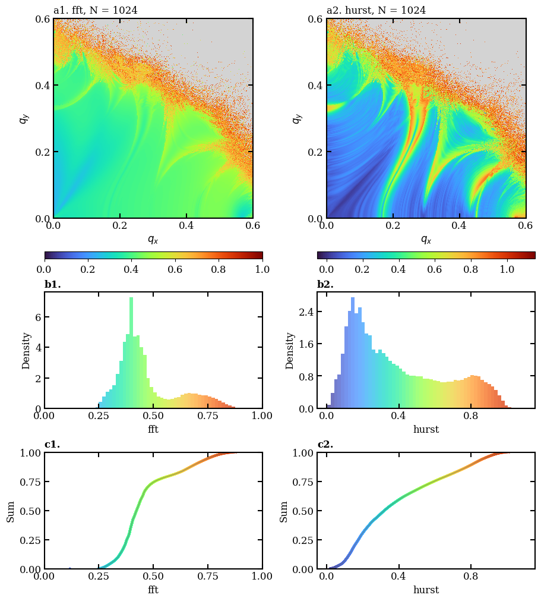
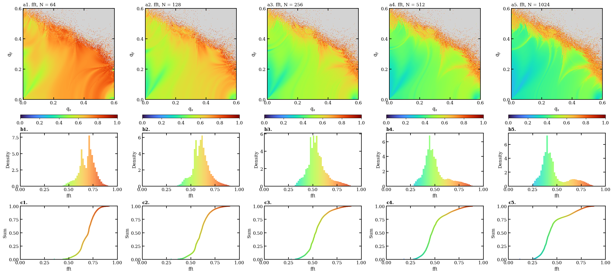
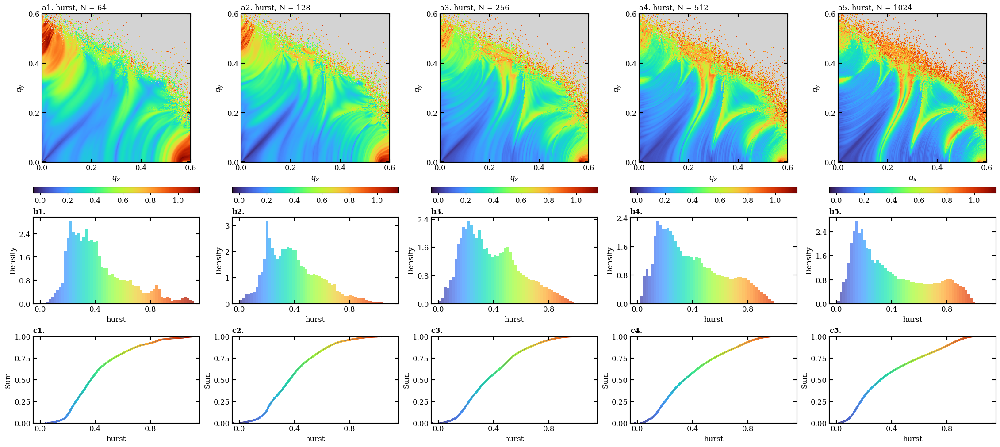
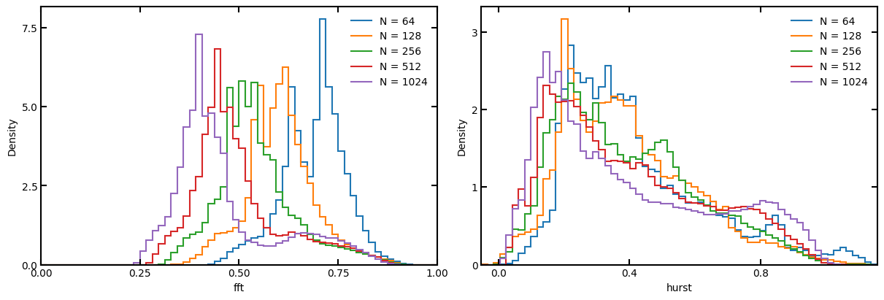

Example-24: Hurst exponent
[1]:
from pathlib import Path
import sys
import jax
import jax.numpy as jnp
import numpy as np
jax.config.update("jax_enable_x64", True)
jax.config.update("jax_default_device", jax.devices("cpu")[0])
from tohubohu import cosine, fft, hurst, hexp, nest_list
from tohubohu.fft import fft_entropy
from tohubohu.util import forward4D
from matplotlib import pyplot as plt, colormaps
from matplotlib.colors import Normalize
from matplotlib.ticker import MaxNLocator
cmap = colormaps.get_cmap('turbo').copy()
cmap.set_bad(color='lightgray')
[2]:
LENGTHS = (64, 128, 256, 512, 1024)
def observable(orbit):
qx, qy, px, py = orbit.T
mqx = jax.numpy.mean(qx)
mpx = jax.numpy.mean(px)
mqy = jax.numpy.mean(qy)
mpy = jax.numpy.mean(py)
sqx = jax.numpy.std(qx)
spx = jax.numpy.std(px)
sqy = jax.numpy.std(qy)
spy = jax.numpy.std(py)
return 0.5*(((qx - mqx)/sqx)**2 + ((px - mpx)/spx)**2) + 0.5*(((qy - mqy)/sqy)**2 + ((py - mpy)/spy)**2)
def parameters():
mux, muy = 2*jnp.pi*0.168, 2*jnp.pi*0.201
return jnp.array([jnp.cos(mux), jnp.sin(mux), jnp.cos(muy), jnp.sin(muy), 0.0])
[3]:
n = 1001
length = 1024
x = jnp.array([0.2, 0.1, 1e-12, 1e-12])
k = parameters()
[4]:
# For each segment length, split the series into complete nonoverlapping segments, subtract each segment's mean and form cumulative deviations
# Divide their range R by the segment population standard deviation S and average R/S over segments, fit log <R/S> = _ + H log s
[5]:
sequence = observable(nest_list(length, forward4D)(x, k))
h_direct = jax.jit(hexp)(sequence)
h_factory = jax.jit(hurst(length, forward4D, observable))(x, k)
print(f"Hurst (direct) : {float(h_direct):.6f}")
print(f"Hurst (factory) : {float(h_factory):.6f}")
Hurst (direct) : 0.475703
Hurst (factory) : 0.475703
[6]:
def compute(n=1024, lengths=LENGTHS, *, include_hurst=True, batch_size=256, radius=5.0):
lengths = tuple(lengths)
axis = np.linspace(0.0, 0.6, n)
qx, qy = np.meshgrid(axis, axis, indexing='xy')
xs = np.stack([qx.ravel(), qy.ravel(), np.full(n*n, 1e-12), np.full(n*n, 1e-12)], axis=1)
k = parameters()
weights = tuple(cosine(t) for t in lengths)
def measure(x):
def step(carry, _):
state, alive = carry
trial = forward4D(jnp.where(alive, state, jnp.zeros_like(state)), k)
alive = alive & jnp.all(jnp.isfinite(trial)) & (jnp.sum(trial**2) <= radius**2)
state = jnp.where(alive, trial, state)
return (state, alive), state
(_, survived), orbit = jax.lax.scan(step, (x, jnp.array(True)), None, length=1024)
sequence = observable(orbit)
entropies = jnp.stack([fft_entropy(sequence[:t], w, background=1e-12) for t, w in zip(lengths, weights)])
if include_hurst:
exponents = jnp.stack([hexp(sequence[:t]) for t in lengths])
return survived, entropies, exponents
return survived, entropies
batch = jax.jit(jax.vmap(measure))
chunks = []
for start in range(0, len(xs), batch_size):
points = xs[start:start + batch_size]
size = len(points)
points = np.pad(points, ((0, batch_size - size), (0, 0)), mode='edge')
chunks.append(tuple(np.asarray(a)[:size] for a in batch(jnp.asarray(points))))
arrays = [np.concatenate([chunk[i] for chunk in chunks]) for i in range(len(chunks[0]))]
survived, entropy = arrays[:2]
valid = survived & np.all(np.isfinite(entropy), axis=1)
if include_hurst:
valid &= np.all(np.isfinite(arrays[2]), axis=1)
result = dict(axis=axis, lengths=np.array(lengths), parameters=np.asarray(k), radius=np.array(radius), turns=np.array(1024), survived=survived.reshape(n, n), valid=valid.reshape(n, n))
for name, values in zip(('fft', 'hurst'), arrays[1:]):
result[name] = np.where(valid[:, None], values, np.nan).T.reshape(len(lengths), n, n)
return result
def summary(data):
print(f'Grid: {len(data["axis"])} x {len(data["axis"])}; '
f'survived 1024 turns: {data["survived"].sum():,}; '
f'common finite sample: {data["valid"].sum():,}')
print('indicator N mean std p05 median p95')
for name in ('fft', 'hurst'):
if name not in data:
continue
for length, values in zip(data['lengths'], data[name]):
finite = values[np.isfinite(values)]
stats = [finite.mean(), finite.std(), *np.quantile(finite, [0.05, 0.5, 0.95])]
print(f'{name:9} {length:4} ' + ' '.join(f'{v:10.5f}' for v in stats))
[7]:
data = compute(n=n, lengths=LENGTHS)
summary(data)
Grid: 1001 x 1001; survived 1024 turns: 746,631; common finite sample: 746,631
indicator N mean std p05 median p95
fft 64 0.68771 0.07873 0.54152 0.70125 0.80761
fft 128 0.60490 0.08553 0.45733 0.60326 0.75800
fft 256 0.54247 0.09889 0.39442 0.52909 0.74423
fft 512 0.49776 0.11590 0.34649 0.46993 0.75039
fft 1024 0.46599 0.13455 0.30806 0.42304 0.75556
hurst 64 0.42101 0.21307 0.17600 0.36902 0.85272
hurst 128 0.39541 0.19685 0.13690 0.36528 0.77054
hurst 256 0.39175 0.20653 0.11937 0.35546 0.78511
hurst 512 0.39197 0.23090 0.09733 0.34128 0.82589
hurst 1024 0.39605 0.25872 0.09050 0.32113 0.87709
[8]:
def value_limits(data, name):
finite = data[name][np.isfinite(data[name])]
if not finite.size:
raise ValueError("no valid indicator values to plot")
return min(0.0, float(finite.min())), max(1.0, float(finite.max()))
def style(ax):
ax.tick_params(direction='in', top=True, right=True, width=1.5, length=6)
ax.xaxis.set_major_locator(MaxNLocator(4))
ax.yaxis.set_major_locator(MaxNLocator(4))
for spine in ax.spines.values():
spine.set_linewidth(1.5)
def panels(data, cases):
cmap = colormaps['turbo'].copy()
cmap.set_bad('lightgray')
labels = {'fft': 'fft', 'hurst': 'hurst'}
with plt.rc_context({'font.family': 'serif', 'font.size': 12, 'text.usetex': False}):
fig, axes = plt.subplots(3, len(cases), squeeze=False, figsize=(4.5*len(cases), 10), gridspec_kw={'height_ratios': [1.2, 0.7, 0.7]}, layout='constrained')
for col, (name, length) in enumerate(cases):
index, = np.flatnonzero(data['lengths'] == length)
values = data[name][index]
finite = np.sort(values[np.isfinite(values)])
vmin, vmax = value_limits(data, name)
norm = Normalize(vmin, vmax)
ax_map, ax_hist, ax_cdf = axes[:, col]
axis = data['axis']
half_step = (axis[1] - axis[0])/2
extent = (axis[0] - half_step, axis[-1] + half_step)*2
img = ax_map.imshow(np.ma.masked_invalid(values), origin='lower', extent=extent, interpolation='nearest', cmap=cmap, norm=norm)
ax_map.set(xlabel=r'$q_x$', ylabel=r'$q_y$')
ax_map.set_title(f'a{col + 1}. {labels[name]}, N = {length}', loc='left', fontsize=12)
fig.colorbar(img, ax=ax_map, orientation='horizontal', pad=0.03, aspect=30)
hist, edges = np.histogram(finite, bins=64, range=(vmin, vmax), density=True)
centers = (edges[1:] + edges[:-1])/2
ax_hist.bar(edges[:-1], hist, width=np.diff(edges), align='edge', color=cmap(norm(centers)), alpha=0.75, linewidth=0)
ax_hist.set(xlim=(vmin, vmax), ylim=(0, None), xlabel=labels[name], ylabel='Density')
ax_cdf.step(finite, np.arange(1, len(finite) + 1)/len(finite), where='post', color='0.45', linewidth=0.6)
stride = max(1, len(finite)//2000)
ax_cdf.scatter(finite[::stride], (np.arange(1, len(finite) + 1)/len(finite))[::stride], c=finite[::stride], cmap=cmap, norm=norm, s=4, rasterized=True)
ax_cdf.set(xlim=(vmin, vmax), ylim=(0, 1), xlabel=labels[name], ylabel='Sum')
for row, ax in enumerate(axes[:, col]):
style(ax)
if row > 0:
ax.text(0.0, 1.04, f'{chr(97 + row)}{col + 1}.', transform=ax.transAxes, fontweight='bold')
return fig
def distributions(data):
fig, axes = plt.subplots(1, 2, figsize=(12, 4), layout='constrained')
for ax, name in zip(axes, ('fft', 'hurst')):
edges = np.linspace(*value_limits(data, name), 65)
for length, values in zip(data['lengths'], data[name]):
finite = values[np.isfinite(values)]
density, _ = np.histogram(finite, bins=edges, density=True)
ax.stairs(density, edges, label=f'N = {length}', linewidth=1.5)
ax.set(xlabel='fft' if name == 'fft' else 'hurst',
ylabel='Density', xlim=(edges[0], edges[-1]))
ax.legend(frameon=False)
style(ax)
return fig
[9]:
panels(data, [("fft", 1024), ("hurst", 1024)])
plt.show()

[10]:
panels(data, [("fft", l) for l in LENGTHS])
plt.show()

[11]:
panels(data, [("hurst", l) for l in LENGTHS])
plt.show()

[12]:
distributions(data)
plt.show()

[ ]:
[ ]: